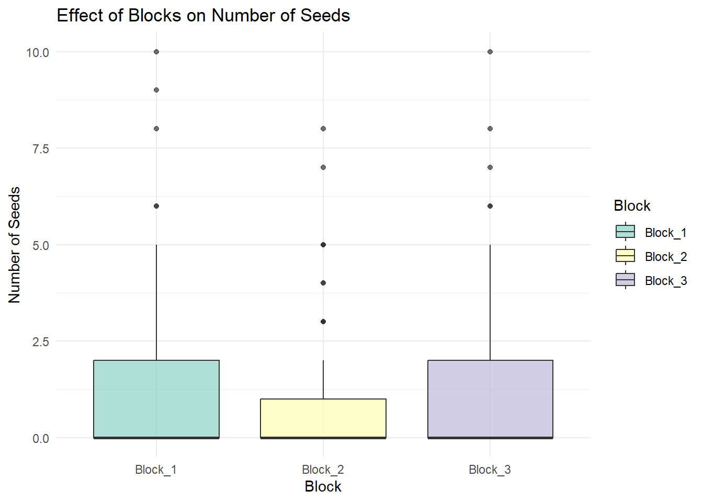
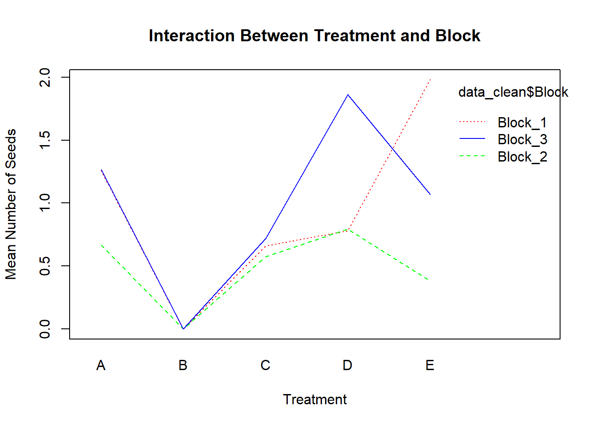
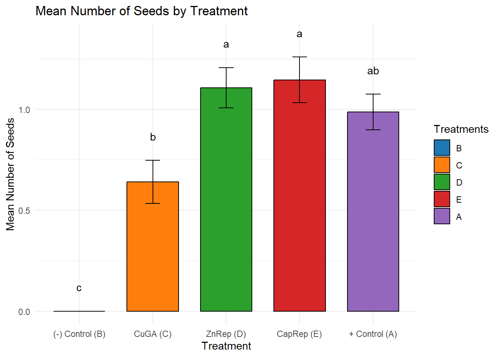

Reevaluating Data on Insect Repellent and Chemical Treatments to Reduce Seed Number in ‘Afourer’ Mandarin
Author
Arfa Ghias, Ana Belem, Cann Doan, Fatima Tahir
Introduction
Obtaining citrus fruits without seeds is a recurrent objective for farmers as it is one of the most valued characteristics, especially in mandarins. Several agronomic techniques have been suggested to control presence of seeds, such as covering with nets and copper sulfate (CuSO4) and gibberellic acid (GA3) treatments. Natural bee repellents are also proposed to reduce the number of seeds per fruit. This study aimed to compare the effect of several agronomic treatments to reduce the seed number in ‘Afourer’ mandarin.
The data is based on the research presented in Scientia Horticulturae (Volume 246, 27 February 2019, Pages 437-447), titled “Insect repellent and chemical agronomic treatments to reduce seed number in ‘Afourer’ mandarin: Effect on yield and fruit diameter”. The dataset includes measurements related to:
Application of insect repellents and chemical treatments.
Seed numbers in ‘Afourer’ mandarin.
Yield and fruit diameter metrics.
Objective of Article:
Focuses on studying methods to manage seed production in Afourer mandarins, a variety known for its desirable seedless characteristics, but it can develop seeds under certain conditions due to cross-pollination.
Objective of Our Project:
A. Replicate statistical analyses from the research article using available data to exercise R skills learned in class.
B. Verify results presented in the article for seed-related data to confirm accuracy, consistency, and explore potential alternatives in processing and presenting data.
C. To extract data independently from an open resource as opposed to a pre-defined datasets.
Methods
The data used in this project originates from the research article “Insect repellent and chemical agronomic treatments to reduce seed number in ‘Afourer’ mandarin: Effect on yield and fruit diameter” published in Scientia Horticulturae (2019). The original data was collected from experiments investigating the effects of different insect repellents and chemical agronomic treatments on seed production, yield, and fruit diameter in ‘Afourer’ mandarin.
Data Structure:
The data includes several variables, such as:
Seed count per fruit under various treatments.
Yield and fruit diameter measurements.
The application of insect repellents and chemical treatments.
Data from different experimental blocks and treatment groups.
The dataset is organized in Excel format, containing raw data and variables related to each of the above parameters.Our main focus was on number of seeds or seed count per fruit under various treatments. We performed the following analyses for our project:
A. Descriptive Statistics
# Load necessary librarieslibrary(ggplot2)knitr::opts_chunk$set(fig.path ='results/')# Load the data (replace 'path/to/frutasysemilla.csv' with the correct path or GitHub URL)data <-read.csv("DATA/frutasysemillas.csv")# Descriptive Statistics for Nseednseeds_mean <-mean(data$Nseeds, na.rm =TRUE)nseeds_se <-sd(data$Nseeds, na.rm =TRUE) /sqrt(sum(!is.na(data$Nseeds)))# Descriptive Statistics for FrDiamfrdiam_mean <-mean(data$FrDiam, na.rm =TRUE)frdiam_se <-sd(data$FrDiam, na.rm =TRUE) /sqrt(sum(!is.na(data$FrDiam)))# Print resultscat("Nseeds: Mean =", nseeds_mean, ", SE =", nseeds_se, "\n")
Nseeds: Mean = 0.8059896 , SE = 0.05224891
cat("FrDiam: Mean =", frdiam_mean, ", SE =", frdiam_se, "\n")
FrDiam: Mean = 57.87245 , SE = 0.2579487
Explanation:
Mean: We calculate the mean for Nseeds (Seed Count) and FrDiam (Fruit Diameter).
Standard Error (SE): The standard error is computed by dividing the standard deviation by the square root of the sample size. This helps estimate the precision of the mean.
Frequency Distribution and Density Curve for Nseeds
Next, we visualize the frequency distribution and density curve for the Nseeds variable to understand its distribution.
# Frequency Distribution and Density Curve for Nseedsggplot(data, aes(x = Nseeds)) +geom_histogram(aes(y = ..density..), binwidth =1, fill ="skyblue", color ="black", alpha =0.7) +geom_density(color ="red", size =1) +ggtitle("Frequency Distribution and Density Curve: Nseeds") +xlab("Nseeds") +ylab("Density") +theme_minimal()
Warning: Using `size` aesthetic for lines was deprecated in ggplot2 3.4.0.
ℹ Please use `linewidth` instead.
Warning: The dot-dot notation (`..density..`) was deprecated in ggplot2 3.4.0.
ℹ Please use `after_stat(density)` instead.
Warning: Removed 332 rows containing non-finite outside the scale range
(`stat_bin()`).
Warning: Removed 332 rows containing non-finite outside the scale range
(`stat_density()`).
Explanation:
Histogram: The histogram represents the frequency distribution of Nseeds, with the density curve overlaid to show the estimated probability density of the data.
Density Curve: The red curve provides a smoothed representation of the distribution of Nseeds.
Frequency Distribution and Density Curve for FrDiam
In this section, we created a similar plot for the FrDiam (Fruit Diameter) variable.
# Frequency Distribution and Density Curve for FrDiamggplot(data, aes(x = FrDiam)) +geom_histogram(aes(y = ..density..), binwidth =2, fill ="lightgreen", color ="black", alpha =0.7) +geom_density(color ="red", size =1) +ggtitle("Frequency Distribution and Density Curve: FrDiam") +xlab("FrDiam") +ylab("Density") +theme_minimal()
Warning: Removed 332 rows containing non-finite outside the scale range
(`stat_bin()`).
Warning: Removed 332 rows containing non-finite outside the scale range
(`stat_density()`).
Explanation:
Histogram: This histogram represents the distribution of the FrDiam variable, with density plotted over it.
Density Curve: The density curve helps to visualize the smooth shape of the distribution for FrDiam.
B. Correlation and Regression Analysis
Here, we explored the relationship between Nseeds and FrDiam using correlation and regression analysis.
Correlation Analysis
# Correlation Analysis between Nseeds and FrDiamcorrelation <-cor(data$FrDiam, data$Nseeds, use ="complete.obs", method ="pearson")cat("Correlation between Fruit Diameter and Seed Count:", correlation, "\n")
Correlation between Fruit Diameter and Seed Count: 0.3897097
Correlation: We compute the Pearson correlation between Nseeds and FrDiam, which measures the strength and direction of the linear relationship between the two variables.
Scatterplot with Linear Fit
# Scatterplot with Linear Fitggplot(data, aes(x = FrDiam, y = Nseeds)) +geom_point(color ="blue", alpha =0.6) +geom_smooth(method ="lm", color ="red", se =TRUE) +labs(title ="Scatterplot with Linear Fit: Seed Count vs Fruit Diameter",x ="Fruit Diameter",y ="Seed Count") +theme_minimal()
`geom_smooth()` using formula = 'y ~ x'
Warning: Removed 332 rows containing non-finite outside the scale range
(`stat_smooth()`).
Warning: Removed 332 rows containing missing values or values outside the scale range
(`geom_point()`).
Explanation:
Scatterplot: The scatterplot shows the relationship between FrDiam (Fruit Diameter) and Nseeds (Seed Count).
Linear Fit: The red line represents a linear regression model fit to the data, indicating the trend between the two variables.
Linear Regression Model
# Linear Regression Modellm_model <-lm(Nseeds ~ FrDiam, data = data)summary(lm_model)
Call:
lm(formula = Nseeds ~ FrDiam, data = data)
Residuals:
Min 1Q Median 3Q Max
-2.6916 -0.8372 -0.3045 0.4073 8.0622
Coefficients:
Estimate Std. Error t value Pr(>|t|)
(Intercept) -3.76233 0.39302 -9.573 <2e-16 ***
FrDiam 0.07894 0.00674 11.712 <2e-16 ***
---
Signif. codes: 0 '***' 0.001 '**' 0.01 '*' 0.05 '.' 0.1 ' ' 1
Residual standard error: 1.334 on 766 degrees of freedom
(332 observations deleted due to missingness)
Multiple R-squared: 0.1519, Adjusted R-squared: 0.1508
F-statistic: 137.2 on 1 and 766 DF, p-value: < 2.2e-16
Explanation:
Linear Regression: We fit a linear regression model to predict Nseeds based on FrDiam. The model summary provides details like the coefficients, R-squared value, and p-value.
Diagnostic Plots for Regression
# Plot diagnostic plots for regression modelpar(mfrow =c(2, 2)) # Set plotting areaplot(lm_model)
Explanation:
Diagnostic Plots: These plots are checked the assumptions of the linear regression model, such as homoscedasticity (constant variance), normality of residuals, and linearity.
C. Categorical Analysis
Chi-Squared Test: Seeded vs Seedless by Treatment
# Categorize fruits as Seeded or Seedlessdata <- data %>%mutate(Seeded =ifelse(Nseeds >0, "Seeded", "Seedless"))# Create a contingency tablecontingency_table <-table(data$Seeded, data$Treatment)# Calculate percentagespercentage_table <-prop.table(contingency_table, margin =2) *100# Perform Chi-squared Testchi_squared_result <-chisq.test(contingency_table)# Print resultscat("Contingency Table:\n")
Contingency Table:
print(contingency_table)
A B C D E
Seeded 73 0 49 80 70
Seedless 76 118 140 88 74
cat("\nPercentage Table:\n")
Percentage Table:
print(round(percentage_table, 2))
A B C D E
Seeded 48.99 0.00 25.93 47.62 48.61
Seedless 51.01 100.00 74.07 52.38 51.39
Treatment B is the most effective, producing 100% seedless fruits, followed by Treatment C (74.07% seedless). Treatments A, D, and E show balanced proportions (~51–52% seedless). The chi-squared test (χ² = 106.0561, p < 0.0001) confirms significant differences, with Treatment B being the best choice for prioritizing seedlessness.
8. Percentage of Seed Presence by Treatment
#chi-squared test to compare seeded versus seedless fruit # Step 1: Create a new column for Seeded and Seedless categorizationdata <- data %>%mutate(Seeded =ifelse(Nseeds >0, "Seeded", "Seedless")) # Categorize fruits# Step 2: Create a contingency table for Seeded vs Seedless fruits by Treatmentcontingency_table <-table(data$Seeded, data$Treatment)# Step 3: Calculate percentagespercentage_table <-prop.table(contingency_table, margin =2) *100# Percentage by Treatment# Step 4: Run the Chi-Squared Testchi_squared_result <-chisq.test(contingency_table)# Step 5: Extract Chi-squared statistic and p-valuex2_value <- chi_squared_result$statisticp_value <- chi_squared_result$p.value# Step 6: Print resultscat("Contingency Table:\n")
Contingency Table:
print(contingency_table)
A B C D E
Seeded 73 0 49 80 70
Seedless 76 118 140 88 74
cat("\nPercentage Table (Seeded vs Seedless by Treatment):\n")
Percentage Table (Seeded vs Seedless by Treatment):
print(round(percentage_table, 2)) # Rounded for clarity
A B C D E
Seeded 48.99 0.00 25.93 47.62 48.61
Seedless 51.01 100.00 74.07 52.38 51.39
#Figure 5 Plot# Load required librarieslibrary(ggplot2)library(dplyr)# Step 1: Exclude NA values in key columnsdata <- data %>%filter(!is.na(Nseeds), !is.na(FrDiam), !is.na(Treatment)) # Remove rows with NA values# Step 2: Categorize Seed Presencedata <- data %>%mutate(SeedPresence =ifelse(Nseeds >0, "TRUE", "FALSE")) # Categorize as Seeded or Seedless# Step 3: Check and force Treatment levelsdata$Treatment <-factor(data$Treatment, levels =c("B", "C", "D", "E", "A")) # Order: C-, CuGA, ZnRep, CapRep, C+# Debugging Step: Print treatment levelsprint("Treatment levels after ordering:")
[1] "Treatment levels after ordering:"
print(levels(data$Treatment))
[1] "B" "C" "D" "E" "A"
# Step 4: Calculate Percentages by Treatment and SeedPresencepercent_data <- data %>%group_by(Treatment, SeedPresence) %>%summarise(Count =n(), .groups ="drop") %>%group_by(Treatment) %>%mutate(Percent = (Count /sum(Count)) *100)# Debugging Step: Print percent_dataprint("Summarized percentage data:")
[1] "Summarized percentage data:"
print(percent_data)
# A tibble: 9 × 4
# Groups: Treatment [5]
Treatment SeedPresence Count Percent
<fct> <chr> <int> <dbl>
1 B FALSE 118 100
2 C FALSE 140 74.1
3 C TRUE 49 25.9
4 D FALSE 88 52.4
5 D TRUE 80 47.6
6 E FALSE 74 51.4
7 E TRUE 70 48.6
8 A FALSE 76 51.0
9 A TRUE 73 49.0
# Step 5: Force the graph to outputggplot(percent_data, aes(x = Treatment, y = Percent, fill = SeedPresence)) +geom_bar(stat ="identity", position ="stack") +geom_text(aes(label =sprintf("%.1f%%", Percent)),position =position_stack(vjust =0.5), color ="white", size =4) +labs(title ="Percentage of Seed Presence by Treatment",x ="Treatment",y ="Percentage",fill ="Seed Presence") +theme_minimal() +scale_x_discrete(labels =c("C-", "CuGA", "ZnRep", "CapRep", "C+")) # Correct display labels
Explanation
The chart shows seed presence across treatments: B (100% seedless) is most effective, followed by CuGA (74.1% seedless). ZnRep, CapRep, and C+ show similar moderate effectiveness (~51% seedless). CuGA stands out as the best active treatment.
D. Inferential statistics
ANOVA
ANOVAs were used to compare the mean values between treatments and blocks.
Given the past results we can tell the following things regarding:
Treatment:
The effect of the treatments (CuGA, ZnRep, CapRep) on the response variable (Nseeds) is significant.
The very small p-value (2.91e-12) tells us that at least one treatment group is different from the others.
Block:
The “Block” factor (replicates) also has a significant effect on the number of seeds. This means the blocking variable explains some of the variation in your data.
Residuals:
Residuals represent the unexplained variability after accounting for treatments and blocks.
Both the treatment and the block factors influence the response variable (Nseeds). Since the treatment effect is significant, we performed a post-hoc test ( Tukey’s test) to find out which treatment groups differ from each other.
General effect of blocks on number of seeds
ggplot(data_clean, aes(x = Block, y = Nseeds, fill = Block)) +geom_boxplot(alpha =0.7) +theme_minimal() +labs(title ="Effect of Blocks on Number of Seeds",x ="Block",y ="Number of Seeds") +scale_fill_brewer(palette ="Set3")

Interaction between blocks and treatments
interaction.plot(x.factor = data_clean$Treatment, trace.factor = data_clean$Block, response = data_clean$Nseeds, col =rainbow(length(unique(data_clean$Block))), legend =TRUE,xlab ="Treatment", ylab ="Mean Number of Seeds",main ="Interaction Between Treatment and Block")

Tukey test
The Tukey’s post-hoc test results helps to identify which pairs of groups (treatments and blocks) are significantly different after running the ANOVA.
B-A: Group B has a significantly lower mean than Group A.
C-B, D-B, E-B: Groups C, D, and E have significantly higher means than Group B.
D-C and E-C: Groups D and E have significantly higher means than Group C.
Non-Significant Differences:
C-A, D-A, E-A, and E-D: These groups do not show significant differences.
HSD test
The HSD test is needed to clearly group the treatments based on performance and identify which are significantly different.
agricolae_result <-HSD.test(anova_result, "Treatment", group =TRUE)print(agricolae_result$groups)
Nseeds groups
E 1.1458333 a
D 1.1071429 a
A 0.9865772 ab
C 0.6402116 b
B 0.0000000 c
Negative Control (B):
The mean for B is 0 (lowest group) and is significantly different from all other treatments.
This confirms that no intervention (B) results in no seed production, as expected.
Positive Control (A):
The mean for A is 0.986 and belongs to group “ab”, indicating it performs significantly better than the negative control (B).
However, it is not significantly better than treatments E and D, meaning these two treatments perform as well as (or slightly better than) the positive control.
Shapiro Test
The Shapiro-Wilk test is a formal statistical test for normality. The null hypothesis (H0) is that the data is normally distributed.
group_counts_nseeds <- data_clean %>%group_by(Treatment) %>%summarise(unique_count =n_distinct(Nseeds))# Filter out treatments with only one unique value in 'Nseeds'data_filtered_nseeds <- data_clean %>%filter(Treatment %in% group_counts_nseeds$Treatment[group_counts_nseeds$unique_count >1])# Perform the Shapiro-Wilk test on filtered datashapiro_result_nseeds <- data_filtered_nseeds %>%group_by(Treatment) %>%summarise(p_value =shapiro.test(Nseeds)$p.value)# Print the resultsprint(shapiro_result_nseeds)
# A tibble: 4 × 2
Treatment p_value
<chr> <dbl>
1 A 3.03e-14
2 C 1.27e-23
3 D 3.88e-15
4 E 1.75e-15
# Plot the histogram and QQ plot againggplot(data_filtered_nseeds, aes(x = Nseeds)) +geom_histogram(bins =30, fill ="blue", alpha =0.7) +facet_wrap(~ Treatment) +theme_minimal() +labs(title ="Histogram of Number of Seeds",x ="Number of Seeds (Nseeds)",y ="Frequency")
#This plots show whether this analysis follows Normality.#The graphs show non-normal distribution
A p-value < 0.05 means we reject the null hypothesis and conclude the data is not normally distributed.
In this case the results let us interpret that:
A: p = 3.03e-14 → Reject H₀ (not normal)
C: p = 1.27e-23 → Reject H₀ (not normal)
D: p = 3.88e-15 → Reject H₀ (not normal)
E: p = 1.75e-15 → Reject H₀ (not normal)
Since the normality assumption is violated, we needed to use non-parametric alternatives like the Kruskal-Wallis test instead of ANOVA. The Kruskal-Wallis test does not assume normality.
Kruskal-Wallis Test
Due to lack of normality, nonparametric methods were selected to compare the means among treatments and blocks by a Kruskal-Wallis rank sum test.
tukey_result <-HSD.test(anova_result, "Treatment", group =TRUE)tukey_groups <-data.frame(Treatment =rownames(tukey_result$groups),Group = tukey_result$groups$groups)# Calculate means and standard errors for each treatmentsummary_data <- data.seeds %>%group_by(Treatment) %>%summarise(mean =mean(Nseeds, na.rm =TRUE),se =sd(Nseeds, na.rm =TRUE) /sqrt(n()) )#The standard error measures the precision of the sample mean as an estimate of the population mean.#Without dividing by the sqrt the result would simply be the standard deviation, #which measures the spread of individual data points, not the precision of the group mean.# Merge Tukey groups with summary datasummary_data <-left_join(summary_data, tukey_groups, by ="Treatment")summary_data$Treatment <-factor(summary_data$Treatment, levels =c("B", "C", "D", "E", "A"))# Define custom colors for the barscustom_colors <-c("B"="#1f77b4", # Blue"C"="#ff7f0e", # Orange"D"="#2ca02c", # Green"E"="#d62728", # Red"A"="#9467bd"# Purple)# Define custom labels for the x-axisx_axis_labels <-c("(-) Control (B)","CuGA (C)","ZnRep (D)","CapRep (E)","+ Control (A)")# Create the bar plot with error bars and Tukey groupsggplot(summary_data, aes(x = Treatment, y = mean, fill = Treatment)) +geom_bar(stat ="identity", color ="black", width =0.7) +geom_errorbar(aes(ymin = mean - se, ymax = mean + se), width =0.2) +geom_text(aes(label = Group, y = mean + se +0.1), vjust =0) +labs(title ="Mean Number of Seeds by Treatment",x ="Treatment",y ="Mean Number of Seeds",fill ="Treatments") +theme_minimal() +scale_fill_manual(values = custom_colors) +# Apply custom bar colorsscale_x_discrete(labels = x_axis_labels) +# Use custom x-axis labelstheme(axis.text.x =element_text(angle =0, hjust =0.5), # Rotate x-axis labelslegend.position ="right")

According to the given graph:
The best option is the negative control (B), as it produced the fewest seeds.
CuGA (C) could also be useful, as it significantly reduced seed count, although it’s not as effective as the negative control.
ZnRep (D) and CapRep (E) are the least desirable treatments since they resulted in the highest seed production.
Thus, we should prioritize treatments that either have no seeds (B) or minimize seed count, such as CuGA (C), to achieve fruits with the fewest seeds.
E. Visualization Techniques
In this section, we visualize the seed counts by treatment using various types of plots.
Box Plot by Treatment
# Load necessary librarieslibrary(ggplot2)# Ensure Treatment is a factor and ordered correctlydata$Treatment <-factor(data$Treatment, levels =c("A", "B", "C", "D", "E"))# Define colors for each treatmenttreatment_colors <-c("A"="#1f77b4", # Blue for Negative Control"B"="#ff7f0e", # Orange for Variable 1"C"="#2ca02c", # Green for Variable 2"D"="#d62728", # Red for Variable 3"E"="#9467bd") # Purple for Positive Control# Create the box plotggplot(data, aes(x = Treatment, y = Nseeds, fill = Treatment)) +geom_boxplot() +# Draw box plotsscale_fill_manual(values = treatment_colors) +# Assign colorslabs(title ="Box Plot of Seed Counts by Treatment",x ="Treatment",y ="Seed Count") +theme_minimal()
Explanation:
Box Plot: The box plot visualizes the distribution of Nseeds for each treatment, showing the median, quartiles, and outliers. Each treatment is colored differently for clarity.
Bar Chart with Error Bars
# Load necessary librarieslibrary(dplyr)# Calculate means and confidence intervalssummary_data <- data %>%group_by(Treatment) %>%summarise(Mean =mean(Nseeds, na.rm =TRUE),SE =sd(Nseeds, na.rm =TRUE) /sqrt(n()),Lower = Mean -qt(1-0.05/2, n() -1) * SE,Upper = Mean +qt(1-0.05/2, n() -1) * SE)# View the summary dataprint(summary_data)
# A tibble: 5 × 5
Treatment Mean SE Lower Upper
<fct> <dbl> <dbl> <dbl> <dbl>
1 A 0.987 0.107 0.775 1.20
2 B 0 0 0 0
3 C 0.640 0.115 0.414 0.866
4 D 1.11 0.114 0.882 1.33
5 E 1.15 0.140 0.868 1.42
Explanation:
Summary Statistics: We calculate the mean and standard error (SE) for Nseeds by treatment, along with the confidence intervals (Lower and Upper).
Error Bars: These represent the uncertainty around the mean seed count for each treatment.
# Bar Chart with Error Barsggplot(summary_data, aes(x = Treatment, y = Mean, fill = Treatment)) +geom_bar(stat ="identity", color ="black", alpha =0.8) +geom_errorbar(aes(ymin = Lower, ymax = Upper), width =0.2) +labs(title ="Mean Seed Count per Treatment with Confidence Intervals",x ="Treatment",y ="Mean Seed Count") +theme_minimal()
Explanation:
Bar Chart: The bar chart displays the mean seed count for each treatment with error bars representing the 95% confidence interval.
Scatterplot of Seed Count vs Fruit Diameter
# Scatterplotggplot(data, aes(x = FrDiam, y = Nseeds)) +geom_point(color ="blue", alpha =0.6) +geom_smooth(method ="lm", color ="red", se =FALSE) +labs(title ="Scatterplot of Seed Count vs Fruit Diameter",x ="Fruit Diameter",y ="Seed Count") +theme_minimal()
`geom_smooth()` using formula = 'y ~ x'
Explanation:
Scatterplot: This scatterplot shows the relationship between FrDiam and Nseeds, with a red linear regression line.
Violin Plot of Seed Counts by Treatment
# Violin Plotggplot(data, aes(x = Treatment, y = Nseeds, fill = Treatment)) +geom_violin(trim =FALSE) +geom_boxplot(width =0.1, fill ="white", outlier.color ="red") +labs(title ="Violin Plot of Seed Counts by Treatment",x ="Treatment",y ="Seed Count") +theme_minimal()
Explanation:
Violin Plot: The violin plot visualizes the distribution of Nseeds for each treatment, showing the kernel density estimate along with a box plot inside the violin to represent summary statistics.
Recommendation for Visualizations:
For understanding the overall distribution of data, density plots are effective as they highlight the shape of the distribution better.
For comparing treatments, box plots and violin plots clearly show variations and central tendencies.
Bar charts with error bars are ideal for summarizing mean values with their associated uncertainties.
Conclusion
This study assessed the effectiveness of various agronomic treatments in reducing seed numbers in ‘Afourer’ mandarins, a trait highly valued by consumers and producers. Through comprehensive statistical analyses, the results highlighted that treatment B (CuGA) was the most effective in achieving seedlessness, followed by treatment C, while other treatments demonstrated moderate effects. Significant differences between treatments and blocks were identified, emphasizing the influence of both factors on seed count.
The findings support the potential of specific agronomic practices to manage seed production effectively, thereby enhancing fruit quality without compromising yield.